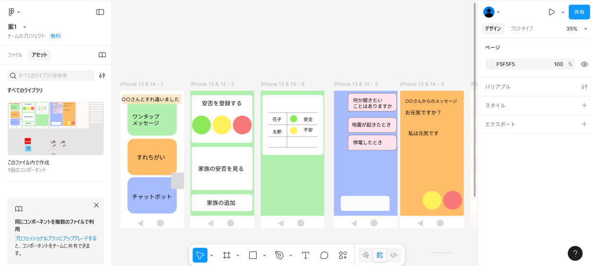
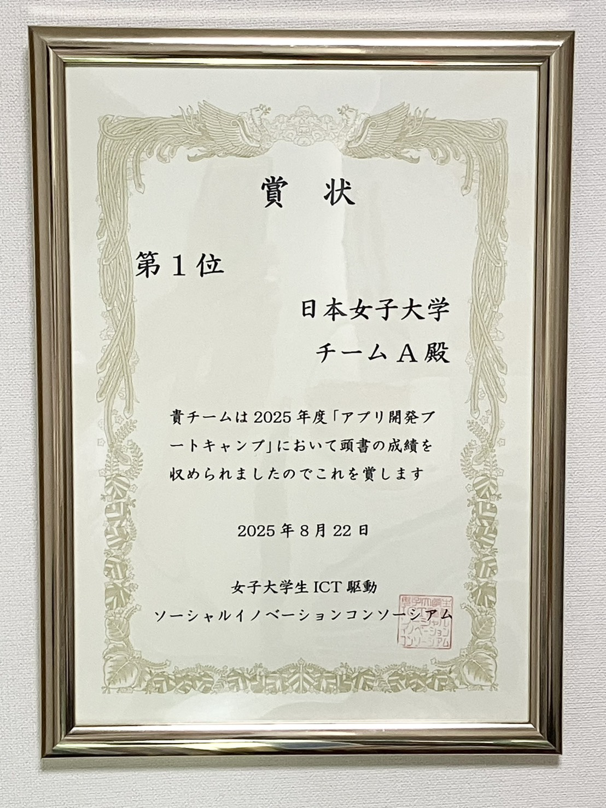

WUSICアプリ開発ブートキャンプは、トータル7日間かけてモバイルアプリを企画、開発します。
今回私たちは、以下の流れに沿ってアプリ開発を行いました。
Day1～Day2 アイデアソン（大妻女子大学千代田キャンパス）
アイデアソンとは、「アイデア（Idea）」と「マラソン（Marathon）」を組み合わせた造語で、特定のテーマについて参加者がチームを組み、短時間で集中的に新しいアイデアを生み出す取り組みです。
私たちは今回、Miroを使用してアイデア出しを行い、質より量を重視して積極的に意見を出し合いました。
その中で、特に「高齢者のデジタルデバイド（情報格差）」に焦点を当て、課題や解決策を深掘りしていきました。
また、限られた時間の中で考えるアイデアは、最初は物足りなく感じることもありましたが、時間制限があったからこそ集中でき、メリハリをつけて良い発想を生み出すことができました。
Day3 デザイン勉強（大妻女子大学千代田キャンパス）
この日は、富士通株式会社の方に、デザインツール「Figma」の使い方とデザインの基本についてご指導いただきました。
色の使い方やユニバーサルデザインの考え方など、実践的な内容を学ぶことができました。
下の写真は、私たちがFigmaで作成した途中段階のデザイン案です。

Day4～Day7 アプリ開発（日本女子大学目白キャンパス）
アイデアソンで考えた内容をもとに、画面と機能を設計し、HTML、CSS、javascript、さらには大規模言語モデル（LLM）のAIであるGeminiのAPIや、Google Apps Scriptを活用して、アプリ開発を行いました。
私たちは、1〜3日目でほとんどの開発を終え、4日目には発表準備に取り組みました。
途中、メンバーの体調不良などのトラブルもありましたが、無事に予定どおり進めることができました。
これまで一日中ひとつの開発に集中して取り組む経験がなかったため、体力的にも精神的にも大変でした。 しかし、３人で意見を出し合い協力しながら楽しく最後までやり遂げることができました。
Day8 最終発表（富士通株式会社）
富士通株式会社の本社に伺い、最終発表を行いました。発表は7分、質疑応答も7分という短い時間でしたが、あっという間に感じるほど充実した時間でした。
結果、私たちは全８グループの中で見事第１位になることができました！！
このわずか8日間で、本当に多くのことを学び、一生忘れられない経験となりました。また、たくさんの方々から温かいアドバイスやご支援をいただき、感謝の気持ちでいっぱいです。
そして何よりも、最後まで一緒に走り抜いた仲間の存在があったからこそ、ここまで頑張ることができました。本当に素晴らしい経験でした。
